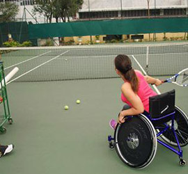

São Caetano tem Projeto de Esporte Adaptado de Tênis para Cadeirantes
O esporte é fundamental para um deficiente administrar sua vida de forma natural. Além disso, ele é uma ferramenta muito poderosa, capaz de tirar a vergonha e o preconceito do cadeirante com ele mesmo. A prática do esporte em cadeira de rodas torna a pessoa mais independente e mostra a ela, através das vitórias pessoais, que é possível superar obstáculos.
O tênis em cadeira de rodas foi criado em 1976, nos Estados Unidos, por Jeff Minnenbraker e Brad Parks. Eles construíram as primeiras cadeiras adaptadas para o jogo e difundiram em seu país. Em 1977 teve o primeiro torneio pioneiro, em Griffith Park, na Califórnia. O primeiro campeonato nacional nos EUA aconteceu em 1980. Oito anos depois, foi fundada a Federação Internacional de Tênis em Cadeira de Rodas (IWTF).
Em 1988, a modalidade foi exibida nos Jogos Paraolímpicos de Seul. Em 1991, a entidade foi incorporada à Federação Internacional de Tênis (ITF), que hoje é a responsável pela administração, regras e desenvolvimento do esporte em nível global. Barcelona (1992), foi o marco para o tênis em cadeira de rodas, pois passou a valer medalhas. Desde então homens e mulheres disputam medalhas nas quadras em duplas ou individual. As regras do tênis em cadeira de rodas são as mesmas do esporte tradicional, tirando um detalhe: a bola pode dar dois quiques na quadra antes de ser rebatida.
Beatriz Radomille é a primeira atleta selecionada para o Projeto Esporte Adaptado de Tênis assistido pela secretária dos Direitos das pessoas com deficiência de São caetano do Sul . Dia 19 de outubro, mais dois alunos iniciarão o treinamento. As aulas para cadeirantes estão sendo realizadas as 6ª feiras horários das 14:00/15:00/16:00.
O primeiro tenista brasileiro em cadeira de rodas foi José Carlos Morais, em 1985. José Carlos conheceu o esporte quando foi à Inglaterra competir pela seleção nacional de Basquete em Cadeira de Rodas. O Brasil estreou nos Jogos Paraolímpicos, em Atlanta (1996), com Morais novamente como pioneiro e Francisco Reis Junior. Na Paraolimpíadas de Atenas (2004), Mauricio Pommê e Carlos Santos, o Jordan, representaram o país. Nos Jogos Paralímpicos de Londres o Brasil teve a sua maior participação com o total de cinco atletas, sendo quatro homens Carlos Jordan Santos, Daniel Rodrigues Alves, Mauricio Pomme e Rafael Medeiros (maior número do país na história) e uma mulher, Natalia Mayara, que foi a primeira do país na competição.
Fonte ABC do ABC.